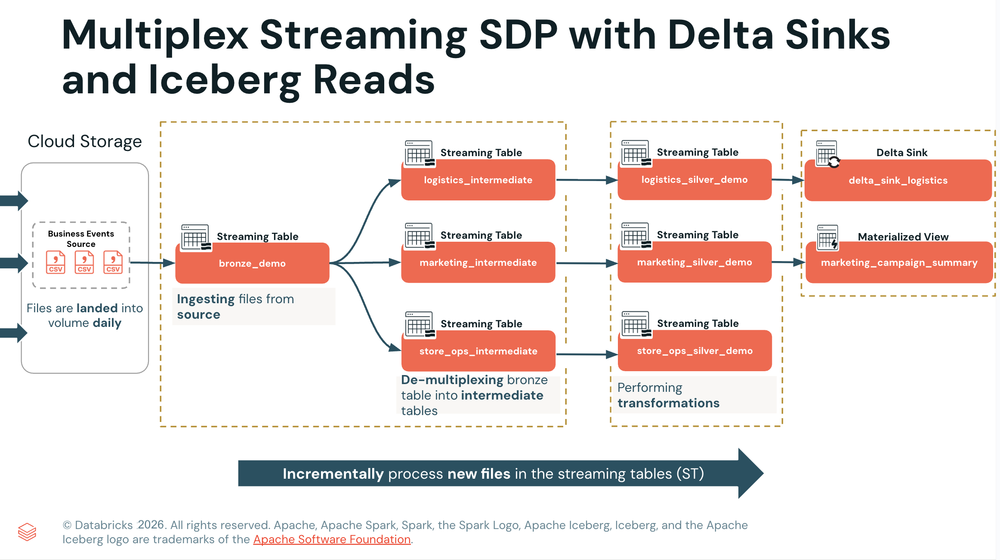

Section 3 · Data Transformation and Modelling · Quelle: Kurs 5, Kapitel 3–4
In vielen Unternehmen laufen unterschiedliche Ereignistypen – Marketing-Events, Logistik-Meldungen, Store-Vorgänge – über ein und denselben technischen Kanal, etwa ein einzelnes Kafka-Topic oder einen gemeinsamen Cloud-Speicherpfad. Ohne besondere Vorkehrung müsste für jeden Ereignistyp eine eigene Ingestion-Pipeline mit eigenem Checkpoint gebaut werden – bei fünf Ereignistypen also fünf parallele, weitgehend redundante Pipelines. Das Multiplex-Muster löst dieses Problem, indem es die Quelle nur einmal liest und die Daten erst anschließend nach Typ auffächert. Dieses Kapitel behandelt außerdem zwei eng verwandte fortgeschrittene Techniken: Delta Sinks für Schreibzugriffe außerhalb der von der Pipeline verwalteten Tabellen, und Delta UniForm für den lesenden Zugriff aus Iceberg-kompatiblen Tools wie Snowflake oder Trino.
Der Kerngedanke ist einfach: Zunächst werden alle Ereignistypen in eine gemeinsame Bronze-Tabelle eingelesen, ohne sie zu unterscheiden. Ein Typ-Feld im Nachrichtenkörper (z. B. event_group oder topic) identifiziert anschließend, zu welcher Fachdomäne ein Datensatz gehört. Erst in einem zweiten Schritt werden die Daten anhand dieses Feldes in domänenspezifische Zwischentabellen aufgeteilt („Fan-out“). Der entscheidende Vorteil: Es existiert nur ein Checkpoint und nur ein Lesevorgang auf die Quelle, unabhängig davon, wie viele Domänen am Ende bedient werden. Ändert sich etwas an der Quelle – ein neues Feld, ein geänderter Pfad – muss diese Änderung nur an einer Stelle nachgezogen werden.
Im Beispiel aus der Demo-Pipeline liegen Business-Events als JSON-Payload in einer Kafka-ähnlichen Quelle vor. Die Bronze-Tabelle liest den rohen Payload zunächst als VARIANT-Typ ein – ein semi-strukturierter Datentyp, der beliebig verschachtelte JSON-Strukturen ohne vorheriges Schema aufnehmen kann:
CREATE OR REFRESH STREAMING TABLE multiplex_1_bronze.bronze_demo
TBLPROPERTIES (
'pipelines.reset.allowed' = false,
'delta.feature.variantType-preview' = 'supported'
)
AS
SELECT
CAST(key AS STRING) AS event_id,
PARSE_JSON(CAST(value AS STRING)) AS event_data_variant,
CAST(topic AS STRING) AS event_group,
CAST(partition AS STRING) AS partition,
CAST(offset AS STRING) AS offset,
_metadata.file_name AS source_file,
_metadata.file_modification_time AS file_mod_time
FROM STREAM read_files('${business_events_source}');
-- Fan-out: eine Zwischentabelle je Fachdomäne, gefiltert nach event_group
CREATE OR REFRESH STREAMING TABLE multiplex_1_bronze.marketing_intermediate
TBLPROPERTIES ('delta.feature.variantType-preview' = 'supported')
AS SELECT
event_id,
event_data_variant,
event_group,
event_data_variant:event_id::STRING AS extracted_event_id,
event_data_variant:timestamp::TIMESTAMP AS timestamp,
event_data_variant:campaign_id::STRING AS campaign_id,
event_data_variant:impressions::LONG AS impressions,
event_data_variant:clicks::LONG AS clicks,
event_data_variant:spend_usd::DOUBLE AS spend_usd,
source_file, file_mod_time
FROM STREAM multiplex_1_bronze.bronze_demo
WHERE event_group = 'business_events_marketing';
Analog dazu entstehen logistics_intermediate und store_ops_intermediate als weitere Zwischentabellen, jeweils mit einer eigenen WHERE event_group = ...-Bedingung und ihren spezifischen, aus dem VARIANT extrahierten Feldern. Der Doppelpunkt-Operator (event_data_variant:feld) navigiert dabei durch die JSON-Struktur, und der ::-Operator castet das Ergebnis auf den passenden Zieltyp. Auf diesen Zwischentabellen bauen anschließend die eigentlichen Silver-Tabellen der jeweiligen Fachdomäne auf, etwa mit berechneten Kennzahlen wie click_through_rate im Marketing-Zweig.

Standardmäßig verwaltet eine Deklarative Pipeline jede Streaming Table und jede Materialized View selbst – inklusive Lineage-Tracking und Expectations. Ein Sink durchbricht dieses Prinzip bewusst: Er erlaubt es, Streaming-Daten aus der Pipeline heraus in eine externe Delta-Tabelle, ein Kafka-Topic oder einen Azure-Event-Hub zu schreiben – also in ein Ziel, das außerhalb des von der Pipeline verwalteten Bereichs liegt. Das ist etwa für Reverse-ETL-Szenarien relevant, bei denen verarbeitete Daten wieder an operative Systeme zurückgespielt werden sollen, oder wenn eine Tabelle Eigenschaften benötigt, die auf Pipeline-verwalteten Tabellen nicht gesetzt werden können – wie im nächsten Abschnitt beschrieben.
Sinks stehen ausschließlich über die Python-API zur Verfügung; eine SQL-Entsprechung existiert nicht. Die Definition erfolgt zweistufig: Zunächst wird der Sink mit dp.create_sink() registriert, anschließend schreibt eine mit @dp.append_flow dekorierte Funktion kontinuierlich neue Datensätze hinein. Checkpointing übernimmt append_flow automatisch; es werden pro Lauf ausschließlich neue Datensätze angehängt, nie überschrieben.
from pyspark import pipelines as dp
my_catalog = spark.conf.get("my_catalog")
dp.create_sink(
name = "delta_sink_logistics",
format = "delta",
options = { "tableName": f"{my_catalog}.multiplex_3_gold.logistics_delta_sink" }
)
@dp.append_flow(name = "delta_sink_logistics_flow", target="delta_sink_logistics")
def delta_sink_logistics_flow():
return(
spark.readStream.table("multiplex_2_silver.logistics_silver_demo")
)
Viele moderne Datenarchitekturen setzen nicht ausschließlich auf Databricks – Tools wie Snowflake, Trino oder Apache Athena sprechen nativ das Apache-Iceberg-Tabellenformat, nicht Delta Lake. Statt die Daten dafür in ein zweites Format zu kopieren und zwei Kopien synchron zu halten, erzeugt Delta UniForm zusätzlich zum Delta-Transaktionslog automatisch Iceberg-Metadaten für dieselben Parquet-Dateien. Es entsteht ein physischer Datenbestand mit zwei logischen Sichten: Databricks-Clients lesen weiterhin über das Delta-Protokoll, externe Iceberg-Clients greifen über den Iceberg-REST-Katalog auf dieselben Dateien zu. Die Iceberg-Metadaten werden dabei asynchron nach jedem Delta-Commit aktualisiert, sodass reguläre Schreibvorgänge nicht verlangsamt werden.
Wichtig für den Pipeline-Kontext: Pipeline-verwaltete Streaming Tables und Materialized Views unterstützen UniForm nicht direkt – die dafür nötige Tabelleneigenschaft delta.universalFormat.enabledFormats lässt sich auf ihnen nicht setzen. Genau hier schließt sich der Kreis zu den Delta Sinks aus dem vorherigen Abschnitt: Die Pipeline schreibt ihre Ergebnisse über einen Sink in eine gewöhnliche externe Delta-Tabelle, und erst auf dieser lassen sich die für UniForm nötigen Eigenschaften setzen.
| Schritt | Tabelleneigenschaft | Zweck |
|---|---|---|
| 1 | delta.enableDeletionVectors = false | Iceberg v2 kennt keine Soft-Delete-Markierungen – Deletion Vectors müssen deaktiviert sein |
| 2 | delta.columnMapping.mode = name | Konsistente Spaltenkennungen zwischen Delta- und Iceberg-Schema |
| 3 | delta.enableIcebergCompatV2 = true | Aktiviert das mit Iceberg v2 kompatible Delta-Schreibprotokoll |
| 4 | delta.universalFormat.enabledFormats = iceberg | Stößt die asynchrone Generierung der Iceberg-Metadaten an |
Diese Eigenschaften müssen einmalig gesetzt werden, bevor die erste Zeile geschrieben wird. Externe Tools erhalten den Zugriff dabei governt über Unity Catalog, das gleichzeitig als Iceberg-REST-Katalog fungiert – ohne zusätzliche Infrastruktur. Zu beachten ist, dass Schreibzugriffe weiterhin ausschließlich über Delta erfolgen dürfen: Iceberg-Clients können UniForm-Tabellen nur lesen, nicht beschreiben.
enableIcebergCompatV2 werden Deletion Vectors für Iceberg-v2-Lesezugriffe grundsätzlich nicht unterstützt – sie müssen vor der Aktivierung deaktiviert bzw. per REORG-Befehl aus bestehenden Tabellen entfernt werden. Seit Kurzem unterstützt Apache Iceberg v3 Deletion Vectors auch bei aktiviertem UniForm; wer diese Kombination benötigt, kann eine Tabelle stattdessen auf delta.enableIcebergCompatV3 = true heben. Für Sinks gilt zudem: append_flow ist der einzige unterstützte Flow-Typ, Pipeline-Expectations werden auf Sinks nicht angewendet, und es werden ausschließlich Streaming-Queries unterstützt, keine Batch-Abfragen.